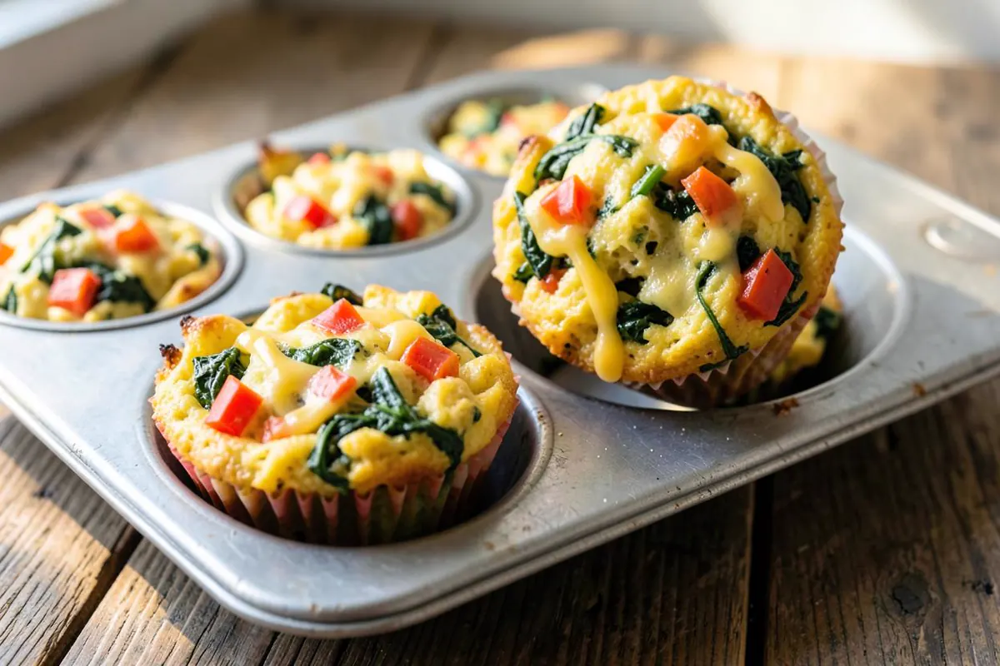

Veggie Egg Muffin Cups

Illustrative image.
Egg muffin cups are a batch-cooking breakfast that solves the weekday morning problem. Eggs, milk, chopped vegetables and cheddar are whisked together, poured into a muffin tin and baked into portable portions that reheat in under a minute.
The recipe makes twelve cups and takes about forty minutes, most of it oven time. They keep for several days in the fridge and freeze well, which is the whole point.
Ingredients
- 8 large eggs
- 1/4 cup milk
- 1/2 tsp salt
- 1/4 tsp black pepper
- 1 cup chopped fresh spinach
- 1/2 cup diced bell pepper
- 1/4 cup sliced green onion
- 1/2 cup shredded cheddar cheese
- Cooking spray or butter, for the pan
Instructions
- Preheat the oven to 350°F (175°C) and grease a 12-cup muffin tin well.
- Whisk the eggs, milk, salt and pepper until combined.
- Divide the spinach, bell pepper, green onion and cheese among the cups.
- Pour the egg mixture over the vegetables, filling each cup about three-quarters full.
- Bake for 20 to 22 minutes, until set in the center and lightly golden. Cool for a few minutes, then run a knife around the edges to release.
- Grease the pan generously, or use silicone liners.
- Do not overfill, since the eggs puff while baking.
- Pre-cook raw sausage or bacon before adding.
- Add diced ham or cooked bacon.
- Use salsa and pepper Jack for a Southwest flavor.
Why this recipe works
A splash of milk keeps the eggs tender, and greasing the tin generously is what allows the cups to release cleanly. Pre-cooking watery vegetables is not necessary here, but squeezing the spinach dry prevents the cups from weeping as they bake.
Tips for success
- Grease the muffin tin well, including the rims, or use silicone liners for the cleanest release.
- Fill each cup about three quarters full; the eggs puff up as they bake and then settle.
- Let the cups cool for five minutes before lifting them out, so they hold together.
Substitutions that work
- Swap the cheddar for feta, goat cheese or a dairy-free alternative.
- Add diced ham, cooked bacon or crumbled sausage for a meat version.
- Use any combination of vegetables you have: mushrooms, zucchini or roasted peppers all work.
Storage and make-ahead
Refrigerate in a sealed container for four days. Reheat one or two cups in the microwave for thirty to forty-five seconds. Freeze for up to two months, wrapped individually, and reheat from frozen for about ninety seconds.
Serving suggestions
Serve two or three cups with toast and fruit for a full breakfast, or pack them cold for a snack. They also work as a light lunch with a green salad.
Pan, portions and leftovers
A standard twelve-cup tin works, but silicone liners make the cups far easier to lift out and save you scrubbing. Fill any unused cups halfway with water before the tin goes in the oven, which keeps the pan from warping and stops the empty cups from scorching. Do not overfill: the egg mixture puffs up as it bakes and settles as it cools, so three quarters full is right. If you add wet vegetables such as zucchini, grate and squeeze them dry first. Cooled cups lift out cleanly after five minutes, and they freeze well wrapped individually.
Frequently asked questions
How long do egg muffin cups keep?
About four days in the refrigerator, covered. Freeze them for up to two months if you want a longer stash.
Why did my egg cups stick to the pan?
The tin was not greased well enough, or the cups were pulled out while still hot. Grease generously and let them cool for five minutes first.
Can I use egg whites only?
Yes, but the texture will be firmer and less rich. Use about two cups of egg whites in place of the eight whole eggs.